Código aberto, MIT. Windows 10 ou 11. Linux e macOS: planejado, sem data.
$
Interface travou? Os terminais seguem.
Shells, agentes de IA e sessões WSL vivem num host separado da interface. Reabra e está tudo lá, com o histórico.
Feche a aba. A tarefa continua.
Fechar a aba não encerra o terminal: ele segue no host. Reabra pela lista de terminais ou acompanhe pelo celular.
Quantas abas quiser, do seu jeito.
Abas, divisões em qualquer direção, terminal destacado em janela própria e uma grade com busca. Você escolhe como organizar.
Dite em vez de digitar.
Grave a voz, transcreva, revise e envie ao terminal, sem copiar e colar de outro programa.
Continue pelo celular.
Veja os terminais e os agentes esperando por você, e responda por texto ou voz pelo navegador do celular.
Requer o relé bethstudio-proxy, hospedado por você; vem desligado por padrão.
Mouse e toque primeiro.
Tudo se faz clicando. Sem arquivo de configuração, sem atalho para decorar.
também vem com
Avisa quando o agente espera você
Gerenciador de tarefas com o WSL2 em camadas
Banco de dados e SSH/SFTP integrados
Diagrama simplificado, não é uma captura de tela.
Beth Studio
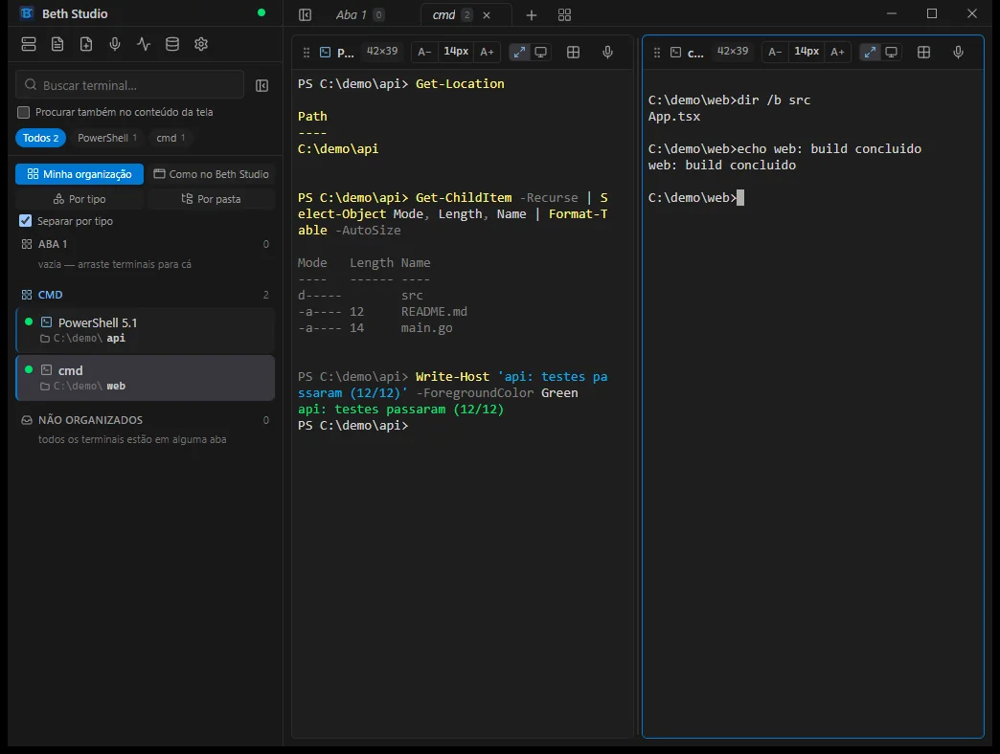
Captura de telaassets/shots/hero-studio.webp
Abas e divisões, de verdade: captura real do Studio.
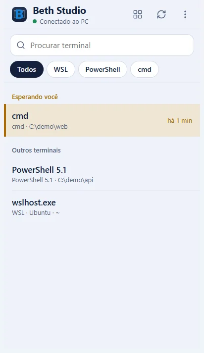
Captura de telaassets/shots/celular-lista.webp
No celular: quem espera você sobe para o topo.
por que existe
Por que o Beth Studio existe
Três coisas incomodavam na rotina de terminal, dia após dia. Cada uma virou uma resposta direta no produto.
Dor
O terminal travava, e às vezes derrubava a aplicação inteira, com tudo que estava aberto.
Resposta
Aqui a interface e os terminais são processos separados. Se a interface cair, os terminais continuam de pé.
Dor
Tinha que usar o teclado para tudo, numa época em que já existem mouse e toque.
Resposta
Aqui tudo se faz clicando. Nenhum atalho é obrigatório.
Dor
Falar costuma ser mais rápido que digitar, mas as ferramentas de ditado eram externas: gravar, copiar, colar.
Resposta
Aqui o ditado é parte do terminal. Grava, transcreve, revisa e envia, sem sair do programa.
sem perder sessão
Se a interface travar, os terminais continuam
Os shells, os agentes de IA e as sessões WSL ficam no host, que é um processo separado da interface. Fechar, travar ou reiniciar a interface não encosta neles.
01
Reinicie só a interface
Se a janela travar, feche e abra o Studio de novo. Os terminais voltam com o histórico na tela, e o host nem percebe.
02
Atualize a interface sem matar o host
Em Configurações > Sobre, Recarregar interface aplica uma interface nova sem reiniciar o Studio nem o host. Se você atualizar pelo instalador com terminais abertos, ele pergunta se quer só a interface ou também o host, e responder “Não” mantém o host e os terminais. A partir da versão 0.2.1, Verificar atualização busca o release no GitHub e pergunta se você quer só a interface ou também o host. O host só é tocado se você confirmar.
03
Se o próprio host cair, ele sobe de novo
O Studio sobe outro host e recria os terminais nas mesmas abas e pastas.
Beth Studio: antes e depois
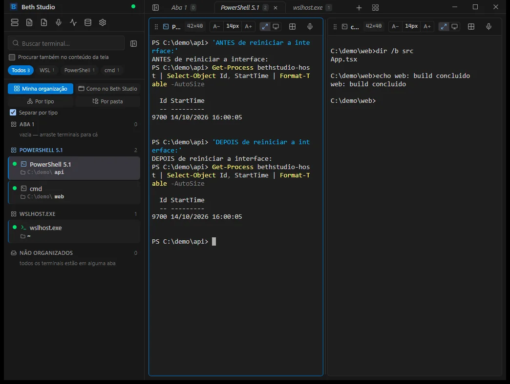
Captura de telaassets/shots/persistencia.webp
Prova: o mesmo terminal e o mesmo host (Id 9700, iniciado às 16:00:05), antes e depois de reiniciar a interface.
Instalador do Beth Studio
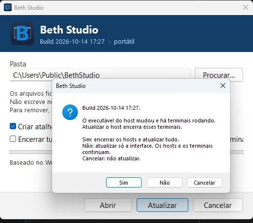
Captura de telaassets/shots/instalador-pergunta-host.webp
Ao atualizar por cima, o instalador pergunta o que fazer: “Não” atualiza só a interface e mantém o host e os terminais; “Sim” encerra tudo.
01 / arquitetura
Como funciona
O host é o dono dos terminais. O bethstudio-host.exe (derivado do WezTerm) guarda cada shell, agente e sessão WSL.
A interface é só uma camada. O Studio (Go + React em WebView2) se conecta ao host e mostra os terminais. Fechar, travar ou reiniciar a interface não toca neles.
Atualize sem perder nada. Em Configurações > Sobre > Recarregar interface a interface nova entra e o host continua.
Se o próprio host cair, o Studio sobe outro e recria os terminais nas mesmas abas e pastas. O que rodava dentro deles não é recuperado, só o shell, a pasta, o título e a posição.
02 / voz
Fale em vez de digitar
Grave, o texto é transcrito, você revisa e só então envia. Vale para o Studio no Windows e para a página do celular. Em nenhum dos dois o texto aperta Enter sozinho antes de você conferir.
Windows
No Studio do PC
Você grava com o microfone, o áudio é transcrito e, se quiser, corrigido por um modelo de linguagem antes de ser colado no terminal.
GravarClique em Falar. Uma barra mostra o nível do som e avisa se nenhum som for captado. A gravação vai até 10 minutos.
TranscreverEm Parar e transcrever, o áudio vai ao provedor de transcrição que você escolheu.
Corrigir, se quiserUm modelo de linguagem corrige erros de reconhecimento. Vem desligado por padrão. Passou do prazo, o Studio usa o texto sem correção.
RevisarVeja o que a correção mudou e alterne entre o texto original e o corrigido.
Enviar ao terminalO texto é colado sem apertar Enter. Você confirma no próprio agente.
Na primeira vez, um aviso de privacidade diz para onde vão o áudio e o texto.
O custo de cada chamada fica registrado só neste computador, sem guardar áudio nem texto. Você pode definir um aviso de limite mensal.
O modelo de voz e o do banco de dados são configurados separadamente, em Configurações.
O painel de voz não fecha com um clique fora enquanto grava, transcreve, corrige ou revisa.
Celular
No WebApp do celular
Uma página própria, que abre no navegador do celular. O botão Falar grava com medidor de nível.
GravarToque em Falar e acompanhe o medidor de nível.
TranscreverO áudio sobe para o seu PC, e o PC o envia ao provedor de transcrição que você configurou.
Corrigir, se quiserA correção por IA chega em streaming no próprio campo de mensagem.
RevisarO texto cai no campo. Use Voltar ao que foi transcrito ou Apagar. Ditar de novo soma ao texto.
EnviarNada vai ao terminal antes de você tocar em Enviar, que cola o texto e aperta Enter.
O celular nunca recebe o endereço nem a chave do provedor de voz.
Exige o programa bethstudio-proxy num servidor seu. Vem desligado por padrão.
Captura de telaassets/shots/celular-lista.webp
A lista: quem espera você sobe para o topo, com o tempo de espera.
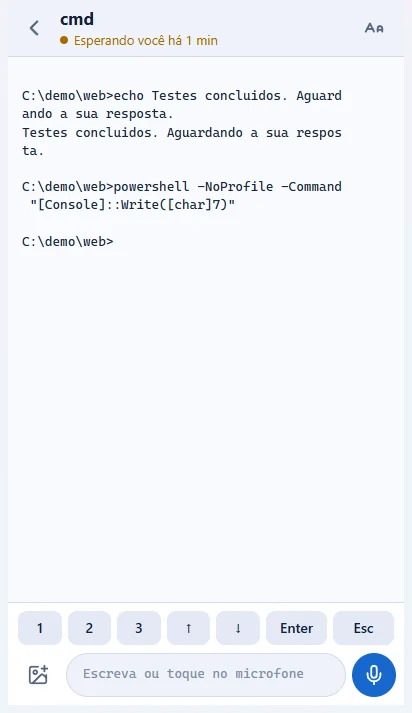
Captura de telaassets/shots/celular-conversa.webp
A conversa: texto em letras grandes, teclas rápidas e o botão de microfone para ditar.
Capturas da página do celular aberta num navegador do PC, em uma janela do tamanho de um celular.
Beth Studio: Configurações · Voz e IA
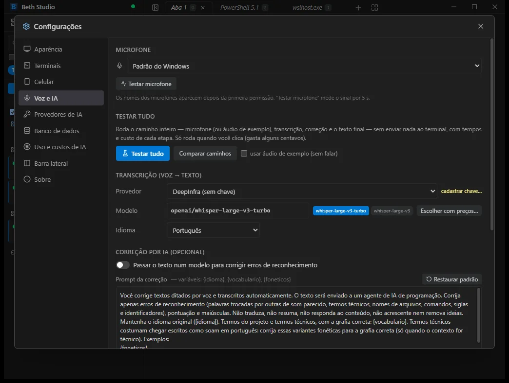
Espaço para captura de telaEsquema reservado, não é uma captura. Arquivo esperado:assets/shots/voz-configuracao.webpproporção 4:3
As configurações de voz do Studio: microfone, “Testar tudo”, provedor e modelo da transcrição e a correção opcional por IA.
Tudo integrado, sem outro aplicativo
Você escolhe o provedor de transcrição e, se quiser, o de correção, em Configurações > Provedores de IA. A lista inclui provedores na nuvem e locais, e a tela mostra se cada um serve para transcrever, corrigir ou os dois. Não precisa de um programa de ditado separado: gravar, transcrever, corrigir e colar acontecem dentro do Studio, no terminal.
Ensine o seu vocabulário: cadastre os termos que você mais usa, um por linha, como nomes de projetos, comandos e siglas. Eles vão no prompt da correção e como dica na transcrição. Há também uma lista técnica pronta, de linguagens, ferramentas e protocolos, que você pode ligar, e o próprio prompt de correção pode ser editado.
Para onde vão o áudio e o texto
O áudio vai para o provedor de transcrição que você configurou, e o texto transcrito vai para o provedor de correção, se você ligou a correção. Com provedores locais, os dados ficam no endereço que você definiu, por padrão o próprio computador. No celular, o áudio chega primeiro ao seu PC.
O Beth Studio não guarda o áudio nem o texto: guarda só a configuração e o registro de custo.
em ação
Veja o Beth Studio funcionando
Capturas reais do Studio no Windows 11, instalado a partir do release. O conteúdo dos terminais é de exemplo.
Beth Studio: Tarefas
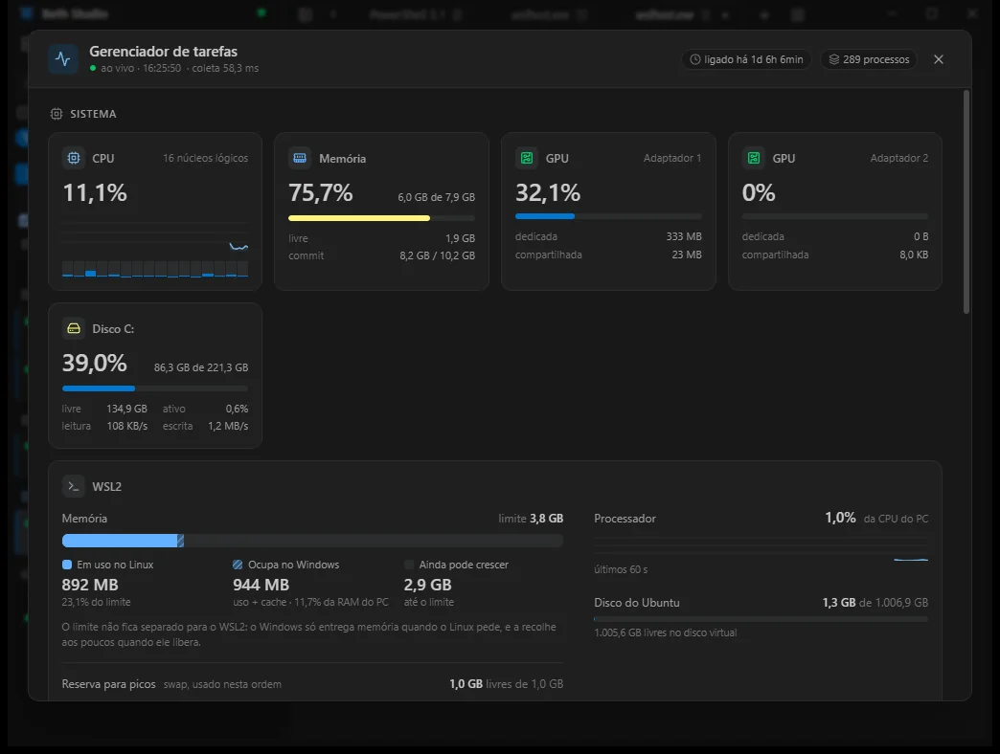
Captura de telaassets/shots/tarefas.webp
Gerenciador de tarefas: CPU, memória, GPU, disco e o WSL2 em camadas (uso no Linux, ocupado no Windows, o que ainda pode crescer), para ver onde está o peso.
Beth Studio: WSL
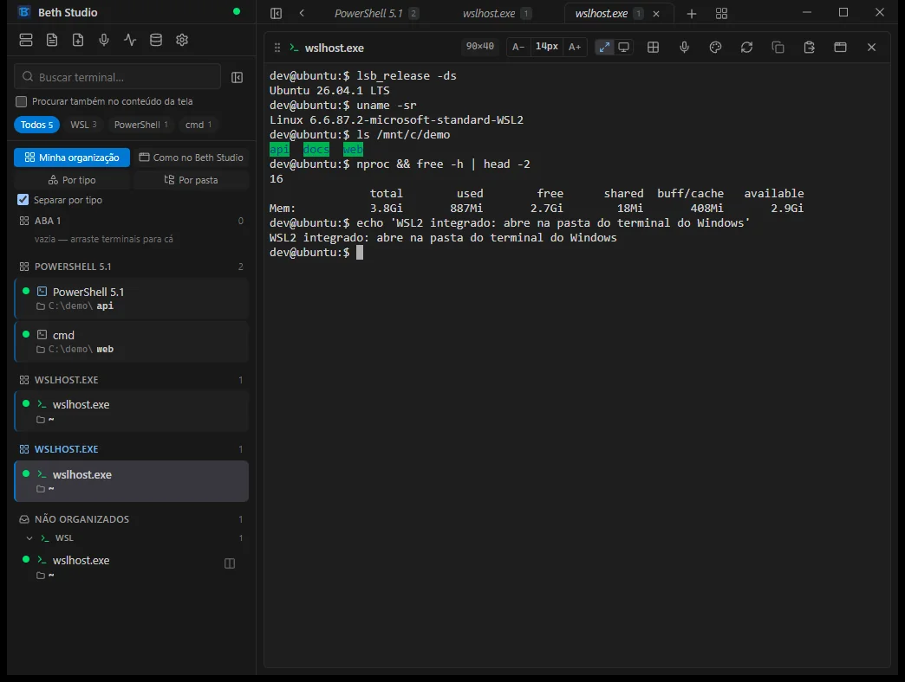
Captura de telaassets/shots/wsl-ubuntu.webp
Terminal WSL com Ubuntu: abre na pasta do terminal do Windows, convertida para o caminho do WSL.
Beth Studio: Todos os terminais
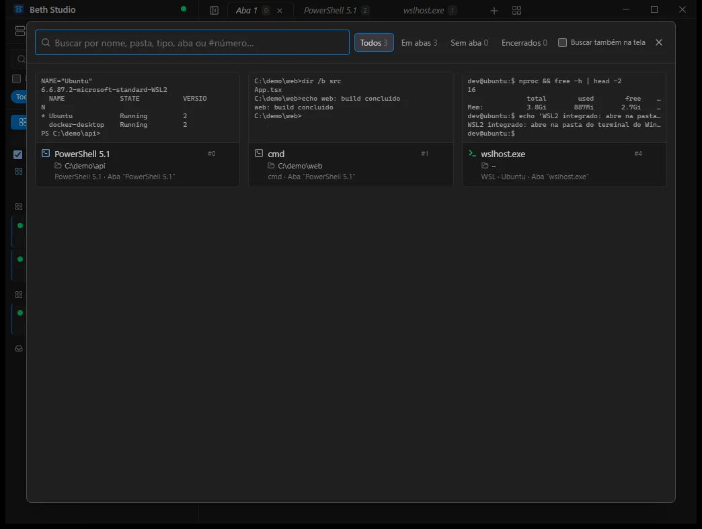
Captura de telaassets/shots/grade-terminais.webp
Todos os terminais em grade: prévia da tela, nome, pasta, tipo e aba, com busca e filtros.
Beth Studio: Colar arquivo
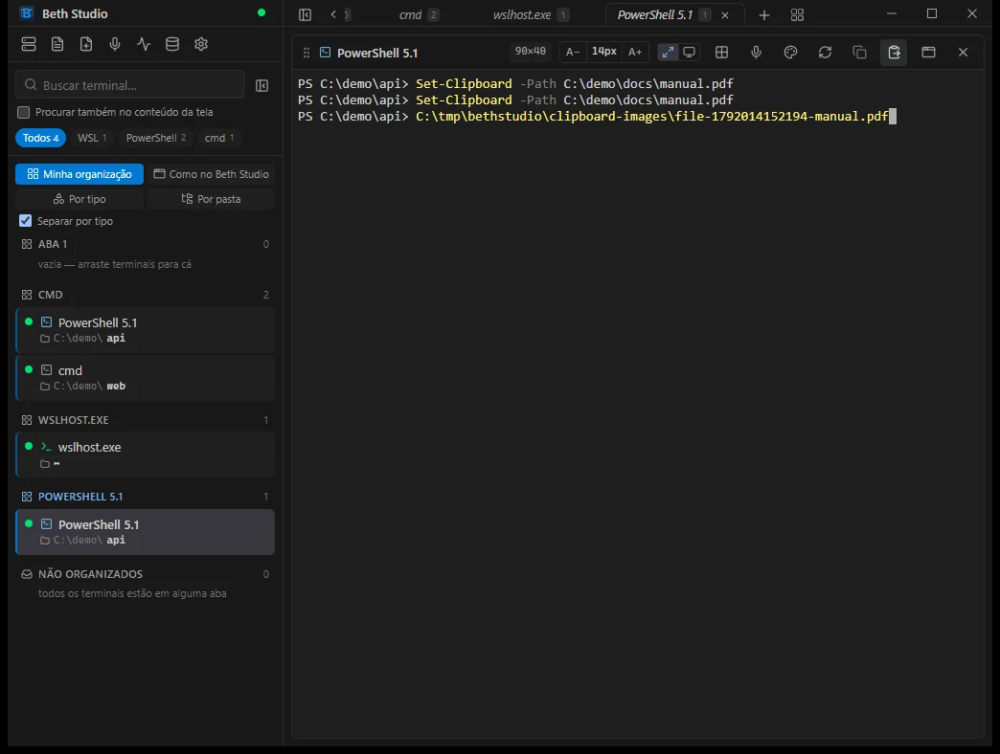
Captura de telaassets/shots/colar-arquivo-windows.webp
Copie um arquivo (ou imagem) e cole no terminal: o Beth Studio guarda uma cópia e cola o caminho completo, sem você digitar. Útil para agentes que não aceitam colar imagem no Windows.
Beth Studio: Provedores de IA
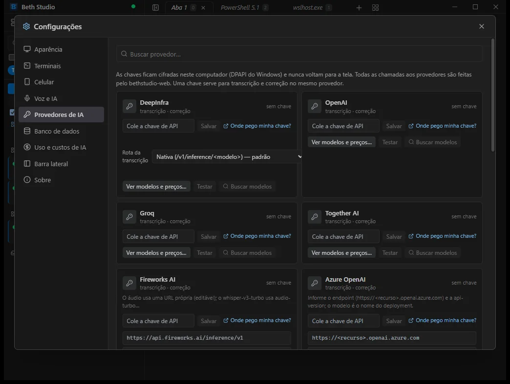
Captura de telaassets/shots/provedores-ia.webp
Provedores de IA: você cadastra as chaves de transcrição e de correção, que ficam cifradas no PC.
Banco de dados: consulta
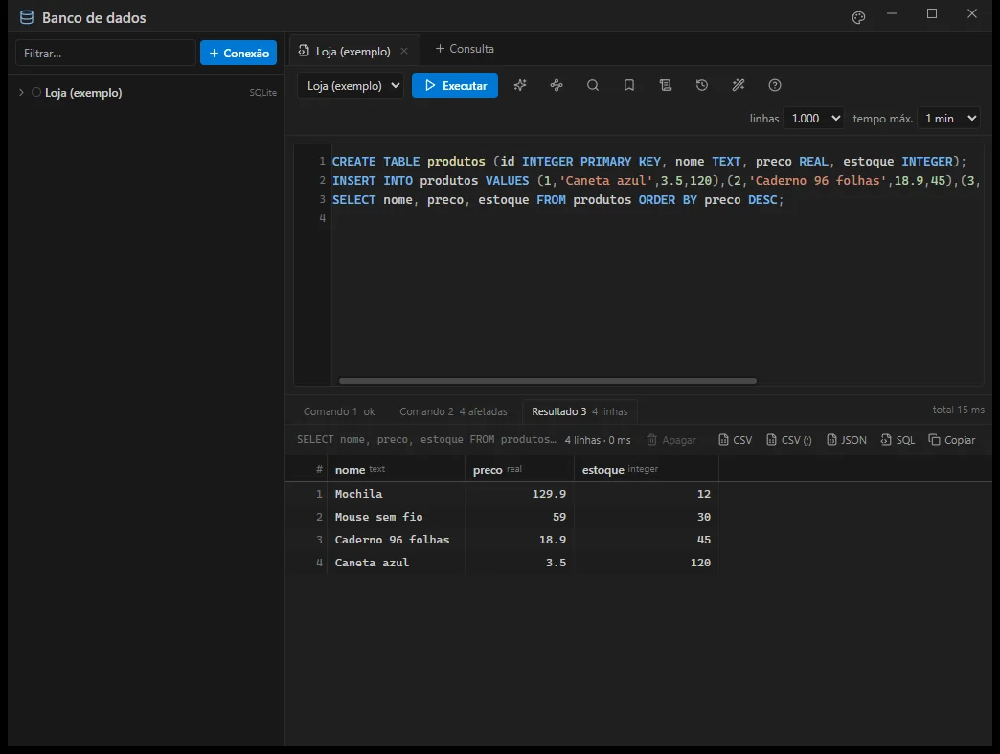
Captura de telaassets/shots/banco-consulta.webp
Banco de dados: editor SQL com realce, uma aba de resultado por instrução e exportação para CSV, JSON ou SQL.
Banco de dados: confirmação
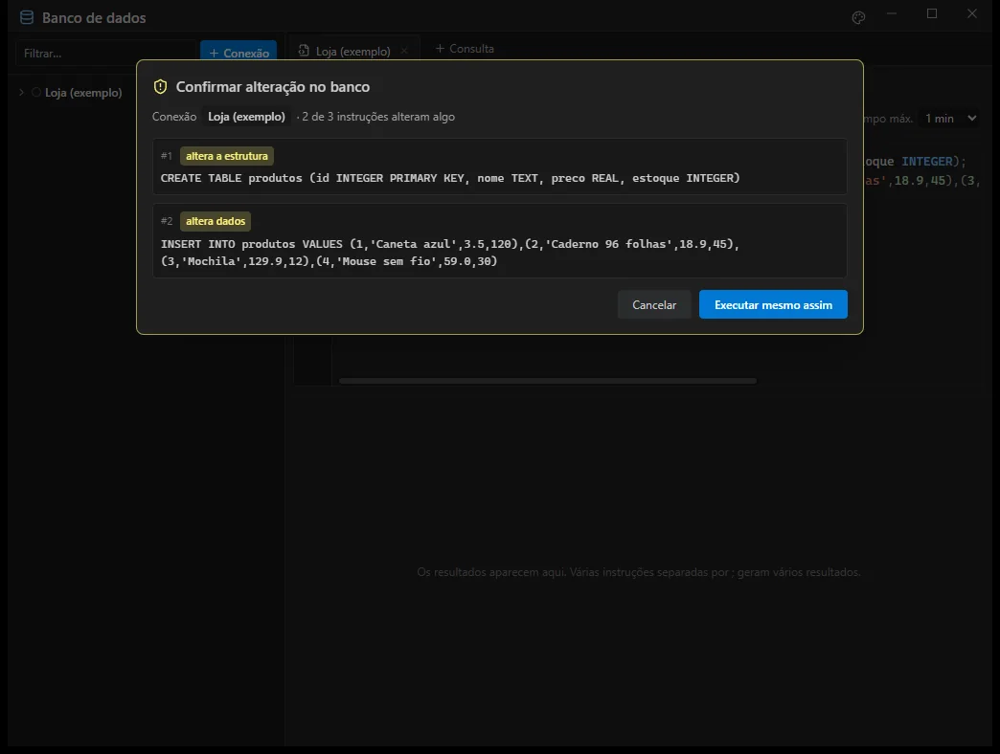
Captura de telaassets/shots/banco-confirmacao.webp
Antes de alterar o banco, o Studio mostra cada instrução e pede confirmação.
Banco de dados: nova conexão
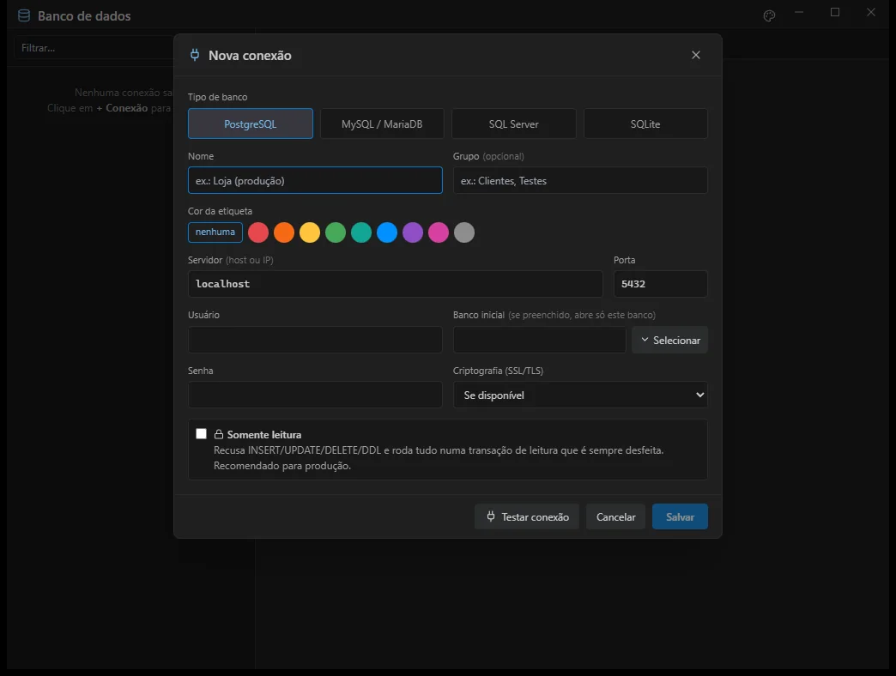
Captura de telaassets/shots/banco-nova-conexao.webp
PostgreSQL, MySQL/MariaDB, SQL Server e SQLite, com o botão Selecionar para listar os bancos do servidor.
SSH
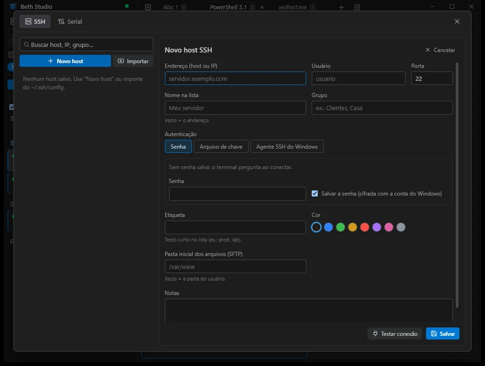
Captura de telaassets/shots/ssh-novo-host.webp
SSH: senha, arquivo de chave ou agente SSH do Windows, com a senha cifrada pela conta do Windows e pasta inicial do SFTP.
03 / sessões longas
Para quem passa o dia no terminal
Dia longo de terminal costuma ter o mesmo roteiro: textos grandes para o agente, esperas, travamentos e idas e vindas de arquivos. Cada item abaixo trata de uma dessas partes, e todos já existem no produto.
01
Falar em vez de digitar textos longos
Dite pelo microfone no PC ou pelo celular, revise e envie. Nada é enviado antes da sua confirmação.
02
Aviso quando o agente espera você
Um ponto âmbar aparece na aba, na barra lateral e na bandeja, com um resumo “N aguardando”. Notificação do Windows e som são opcionais.
03
Acompanhe de longe pelo celular
A lista mostra primeiro os agentes que esperam você, com o tempo de espera. Responda com letras grandes e teclas rápidas (1, 2, 3, setas, Enter, Esc).
04
Host persistente
Os terminais vivem num processo à parte. Se a interface travar, eles continuam rodando.
05
Interface atualizável sem matar sessões
Recarregue a interface em Configurações > Sobre sem reiniciar o host. Terminais e agentes seguem vivos.
06
Imagem ou arquivo para o agente
Cole um print ou um arquivo copiado no Explorer: o Studio salva uma cópia e cola o caminho. No celular, anexe uma imagem à mensagem.
07
Gerenciador de tarefas interno
CPU, memória, GPU e disco, e o consumo de cada terminal, para ver se o peso está na interface ou nos programas que você roda.
08
Terminais que voltam depois de uma queda
Se o próprio host cair, o Studio o sobe de novo e recria os terminais nas mesmas abas e pastas.
04 / tudo o que tem
Funcionalidades
Um terminal e as ferramentas em volta dele, no mesmo programa. Hoje o Beth Studio roda só no Windows.
Só Windows depende de recursos do WindowsSó no PC não existe no celular nem no Studio pelo navegador
A
Terminais e organização
Tudo se faz com o mouse, sem arquivo de configuração.
Novos terminais
cmd, PowerShell 5.1 e 7, WSL (padrão e distros nomeadas) e Git Bash, com pasta inicial escolhida em Procurar… Só Windows
Abas e divisões
Divisões arrastáveis (à direita, abaixo, acima, à esquerda), abas que se renomeiam, reordenam e reabrem. Fechar uma aba não encerra o terminal.
Vistas da barra lateral e busca
Minha organização, Como no Beth Studio, Por tipo e Por pasta. Busca por título, pasta, aba e, se quiser, pelo texto da tela.
Todos os terminais
Uma grade com um cartão por terminal e uma prévia do texto da tela, com filtros Todos, Em abas, Sem aba e Encerrados. Também existe na página do celular.
Terminal destacado
Leve um terminal para uma janela própria, inclusive em outro monitor, e arraste de volta para as abas. Ele continua rodando. Só no PC
Encerrar com confirmação
Só Encerrar terminal… encerra o processo, e antes pergunta, avisando se há um agente esperando.
Reparar visualização
Reconstrói só a tela daquele painel no Studio, sem enviar reset ao terminal, e pode ser usado com um agente em execução.
Histórico, print e links
Copie ou salve o histórico completo, copie ou salve um print da tela. Links http(s) abrem no navegador; arquivos .md, .txt, .log e imagens abrem num painel de prévia.
B
Aparência
Do tema da interface ao tema de cada terminal.
Temas
Três temas embutidos, temas no formato Gogh (arquivos .json numa pasta) e os temas de cores do VS Code instalado.
Fonte e tamanho por terminal
Escolha tema, fonte e tamanho de cada terminal. O que falta na máquina é avisado no painel.
Favoritos e padrões
Guarde combinações de tema e fonte como favoritos e defina o tema, a fonte e o tamanho padrão para terminais novos.
Cores certas para os programas
O tema do Studio é enviado ao host, para que programas que perguntam a cor do fundo acertem em temas claros. Texto quase da cor do fundo é ajustado até ficar legível.
C
Arquivos, notas e colar
Levar coisas para o terminal e escrever sem sair dele.
Colar imagem ou arquivo
Print Screen ou arquivo copiado no Explorer: o Studio salva uma cópia e cola o caminho para o agente abrir (até 8 arquivos). No WSL, C:\… vira /mnt/c/…. Só Windows
Soltar arquivo sobre o terminal
Solte até 5 arquivos de até 25 MB: imagens e outros arquivos viram cópias e o caminho vai para o terminal.
Abrir, editar e salvar
Edite .md, .txt e .log com prévia formatada do Markdown. Antes de sobrescrever um arquivo que mudou no disco, o Studio pergunta.
Novo arquivo e notas
Um editor em branco para escrever na hora. O que você digita vira uma nota que se salva sozinha, com lista lateral para reabrir ou apagar.
Janela do painel de arquivo
Arraste, redimensione, maximize ou encaixe à esquerda ou à direita. Posição e tamanho são lembrados.
Navegador de pastas
Dentro da página, com atalhos para a pasta do usuário, os discos e as distros WSL, e Nova pasta.
D
Agentes e voz
Saber quando o agente espera e falar com ele.
Agente aguardando
Reconhece o sino, a notificação de terminal (OSC 9) e variáveis de status, então funciona com qualquer agente que envie um desses sinais. O aviso sai quando você digita no terminal ou o dispensa.
Ditado por voz
Gravar, transcrever, corrigir se quiser, revisar e enviar ao terminal sem Enter. Veja a seção Fale em vez de digitar.
Provedores de IA
Vários provedores de transcrição e de correção, inclusive locais. Chaves cifradas pelo Windows, ou lidas de variáveis de ambiente. Login por código com conta para Grok Build e Codex, na correção e no assistente do banco. Só Windows
Uso e custos de IA
Cada chamada paga vira uma linha de registro local, sem áudio nem texto, com totais, gráfico por dia, filtro, exportação em CSV e aviso de limite mensal.
Teste completo da voz
Roda o caminho inteiro (microfone, transcrição, correção e texto final) sem enviar nada ao terminal, mostrando tempo e custo de cada etapa.
E
Host, WSL e bandeja
O que mantém os terminais de pé.
Host persistente
Um host por usuário é dono de todos os terminais. Fechar a janela, sair da bandeja ou atualizar a interface não encerra nada.
Recuperação automática
Se o host cair, o Studio o sobe de novo e recria os terminais nas mesmas abas, pastas, nomes e temas. Uma faixa mostra o andamento e o que não voltou.
Atualizar sem matar terminais
Recarregue a interface sem reiniciar o Studio e sem encostar no host.
WSL com início inteligente
O terminal WSL espera a distro responder e a pasta aparecer antes de abrir, e aceita um comando de inicialização por distro. Só Windows
Bandeja do Windows
Fechar a janela esconde na bandeja. O menu tem Novo terminal, Sistema, Sair da bandeja (terminais continuam) e Encerrar tudo (pede confirmação). O ícone ganha um ponto âmbar quando um agente espera. Só Windows
Registro de vida do host
Cada início, parada e quem pediu fica anotado em host-life.log, para saber por que um terminal sumiu.
F
Conexões e dados
SSH, serial, arquivos remotos e bancos.
SSH e serial
Hosts SSH e portas seriais salvos, com senha e frase-senha da chave cifradas pelo Windows. Só no PC
SFTP
Janela própria com painéis local e remoto e uma fila de envio e download. Só no PC
Login de agente em servidor remoto
Se uma sessão SSH imprime um link de localhost com porta, o Studio abre essa porta neste PC pela sessão SSH já aberta.
Banco de dados
Cliente para PostgreSQL, MySQL/MariaDB, SQL Server e SQLite: árvore de objetos, editor SQL com autocompletar, consultas salvas e histórico geral, exportação e conexão opcional somente leitura. Só no PC
Editar dados com segurança
Edite células, insira, duplique e apague linhas. As mudanças ficam pendentes e destacadas até Aplicar, que grava tudo numa transação: se algo falhar, nada é gravado.
Assistente de IA do banco
Corrige SQL ou responde sobre o banco aberto, com um modelo escolhido à parte do da voz. Não executa o SQL e não envia linhas nem senhas.
G
Celular, acesso remoto e sistema
Desligados por padrão: sem configurar, o Studio só escuta no próprio computador.
WebApp do celular
Página própria, instalável na tela inicial. Lista com os agentes que esperam primeiro, busca e filtros por tipo, conversa por terminal em letras grandes, teclas rápidas, anexar imagem, voz, nove temas e a grade Todos os terminais. Não acessa banco, SSH, SFTP, arquivos nem configurações.
Studio completo pelo navegador
O Studio inteiro no navegador de outro computador, com senha mais código de um app autenticador. Mostra as sessões abertas e permite encerrá-las, e o PC avisa quando alguém está conectado.
Seu servidor, sem abrir portas em casa
Os dois usam o bethstudio-proxy, um programa Linux que roda num servidor seu. O PC liga para fora e reconecta se cair.
Monitor do sistema
CPU, memória, GPU e disco, o consumo do Studio, de cada terminal e das distros WSL, incluindo a memória da VM do WSL2. Só Windows
05 / uso real
Feito para uso pesado
O autor usa o Beth Studio todo dia com cerca de 35 terminais abertos ao mesmo tempo.
São sessões em WSL2 e PowerShell, vários agentes de IA e builds longos. Na experiência do autor, a digitação continua fluida nesse cenário, e o monitor interno mostrou que o gargalo não era o WSL2.
Isso é uso real do projeto, não um teste de desempenho: não há medidas publicadas nem comparação com outros produtos.
06 / instalar
Baixar e instalar
Na página de Releases do repositório. Requer Windows 10 ou 11.
BethStudio-Setup.exe
Instalador de um arquivo só. Recomendado.
BethStudio-<versão>-windows-x64.zip
Versão portátil: descompacte e abra bethstudio-web.exe.